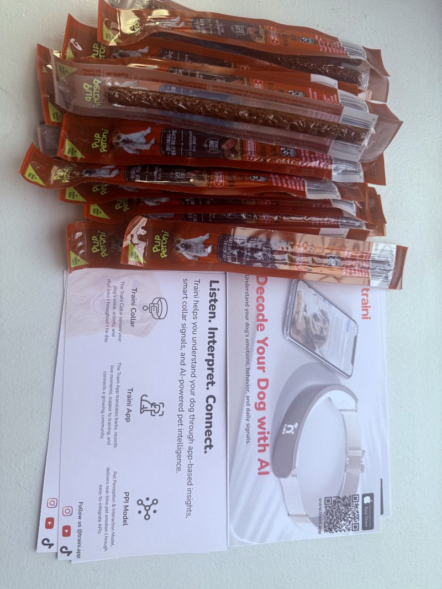
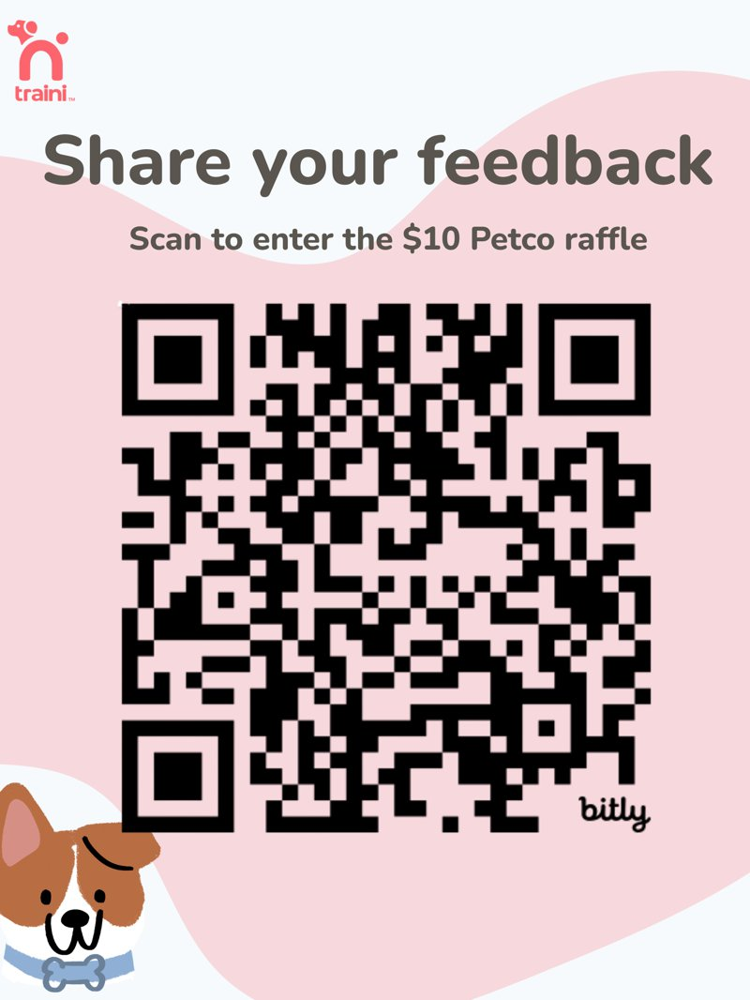

Growth Strategy · Customer Discovery · Field Experimentation
Turning an Ambiguous Growth Problem Into a Real-World Experiment
Given a broad mandate to explore offline activation, I diagnosed the underlying growth friction, formed hypotheses around trust and product value, and designed a NYC field experiment to test them with real dog owners.
CompanyTraini
RoleGrowth Marketing Intern
TimelineSummer 2026
FocusGrowth Audit · Offline Experiment · User Research · Messaging
01Context
Traini was an AI pet-tech company offering AI translation, behavior insights, PetGPT, and training tools for dog owners.
I was given a broad mandate to explore offline activation, but the objective and strategy were left open. Before designing the event, I assessed where the real growth friction was: awareness and curiosity around AI were already relatively strong, while trust and perceived usefulness were much bigger barriers to deeper adoption.
That reframed the project from a simple awareness activation into a way to test what could move dog owners from curiosity to trust and perceived value.
02Growth Audit & Working Hypothesis
To decide what the offline activation should actually test, I first audited Traini's growth system across:
Product positioning
Growth funnel
App Store / ASO
Subscription messaging
Retention hypotheses
NYC growth opportunities
The audit suggested a mismatch between what could attract users initially and what might sustain product value over time.
HOOK
AI Translation / Emotion Understanding
POTENTIAL RECURRING VALUE
Behavior Support / Training / PetGPT
vs.
Key takeaway. The feature that gets users to try the product may not be the feature that makes them stay.
03Experiment Design
Based on that diagnosis, I designed "Decode Your Dog" as a lightweight field experiment rather than a traditional brand-awareness event, built around three goals:
Acquisition — could the messaging get the right dog owners to stop and engage?
Activation — which product experience created the strongest first reaction?
Research — what trust barriers, pain points, and use cases emerged in conversation?
The field workflow:
Approach
→
Pain-Point Question
→
Tailored Demo
→
Mini Interview
→
Download / Feedback
I built the experiment end to end:
Poster / flyer / QR materials
Interview guide + field scripts
Survey + tracking sheet
Persona-based demo logic
Incentive structure
Post-session review framework
Emotion AnalysisAI TranslationPetGPT

Decode Your Dog — poster, flyer, and treat incentive.

QR feedback poster — routed conversations into the tracked survey.
04Field Research & Iteration
Conducted in-person conversations and live product demos with NYC dog owners to test messaging, trust, perceived usefulness, and usage intent
Adapted the conversation and demo based on each owner's needs, including behavior concerns, curiosity about AI, and emotional connection with their dog
Captured qualitative feedback through field notes, survey responses, and observed user reactions
Iterated the field approach as app availability and live-demo reliability affected parts of the pilot
Because the sample was exploratory, I treated the findings as directional signals for the next growth test rather than as proof of scalable acquisition.
05What I Learned
01
Curiosity Opens the Door
"Understanding your dog's emotions and behavior" felt more credible and useful than literal "AI dog translation."
02
Trust Was the Biggest Barrier
Dog owners wanted evidence, transparency, and real-user proof before relying on AI-generated interpretations.
03
Interest ≠ Repeat-Use Intent
Specific behavior problems and novelty could increase engagement, but neither guaranteed enough incremental value for users to return.
04
Experience Shapes Credibility
The quality of the live demo directly shaped whether users trusted the broader AI value proposition.
The growth challenge was not simply getting people to try Traini — it was turning "this is interesting" into "this is useful and trustworthy enough to keep using."
06Recommendation & Next Step
Based on the field learning, I recommended:
Test messaging centered on emotion and behavior understanding, while keeping AI translation as the curiosity hook
Prioritize higher-intent environments such as training classes, behavior workshops, shelter adoption events, and pet-service partnerships
Strengthen demo reliability and proof points before expanding acquisition activity
Separate curiosity, trust, trial, and repeat-use intent as distinct stages of the growth funnel
Final takeaway. The project showed me how to turn a loosely defined marketing task into a structured growth problem — then use customer research and experimentation to decide what was worth testing next.